BACK WINDOW GLASS > INSTALLATION |
| 1. CLEAN BACK DOOR GLASS |
Using a scraper, remove the damaged clips, spacers and adhesive sticking to the glass.
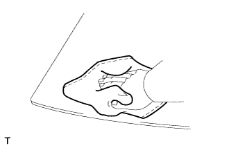 |
Clean the outer circumference of the glass with non-residue solvent.
| 2. INSTALL BACK WINDOW GLASS CLIP RH |
Apply Primer G to the glass where the clip will be installed.
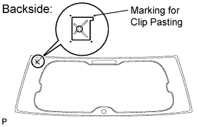 |
Remove the peeling paper from a new clip. Install a new clip onto the glass as shown in the illustration.
| 3. INSTALL BACK WINDOW GLASS CLIP LH |
Apply Primer G to the glass where the clip will be installed.
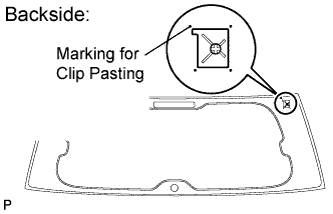 |
Remove the peeling paper from a new clip. Install a new clip onto the glass as shown in the illustration.
| 4. INSTALL NO. 1 BACK WINDOW GLASS SPACER |
Apply Primer G to the glass where the spacer will be installed.
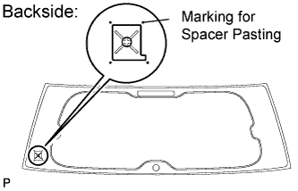 |
Remove the peeling paper from a new spacer. Install a new spacer onto the glass as shown in the illustration.
| 5. INSTALL NO. 2 BACK WINDOW GLASS SPACER |
Apply Primer G to the glass where the spacer will be installed.
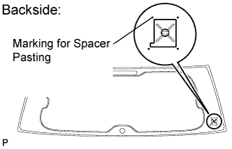 |
Remove the peeling paper from a new spacer. Install a new spacer onto the glass as shown in the illustration.
| 6. INSTALL BACK WINDOW OUTSIDE MOULDING |
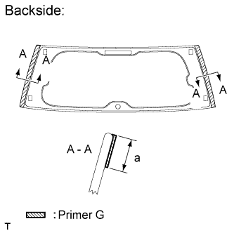 |
Using a brush or sponge, coat the application area of the back window glass outside moulding with Primer G.
| Area | Specified Condition |
| a | 13.0 mm (0.512 in.) |
Remove the peeling paper from 2 new back window outside mouldings. Install the 2 mouldings as shown in the illustration.
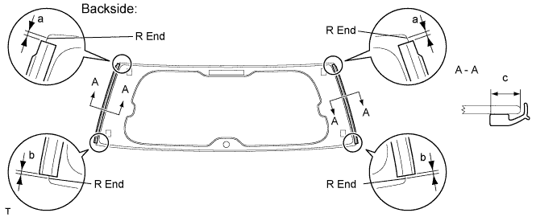
| Area | Specified Condition |
| a | 1.5 mm (0.0591 in.) |
| b | 1.0 mm (0.0394 in.) |
| c | 11.0 mm (0.433 in.) |
| 7. INSTALL BACK WINDOW GLASS |
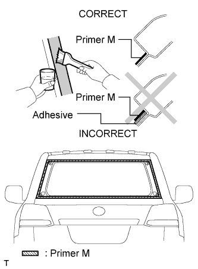 |
Using a brush or sponge, apply Primer M to the exposed part of the vehicle body.
Using a brush or sponge, apply Primer G to the contact surface of the back window glass.
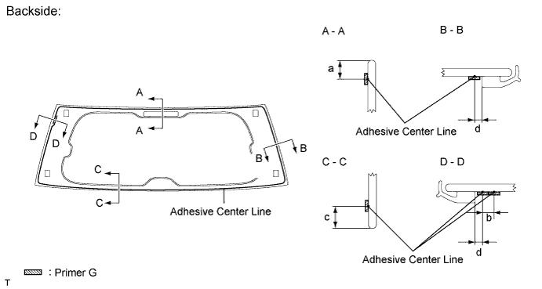
| Area | Specified Condition |
| a | 11.0 mm (0.433 in.) |
| b | 8.0 mm (0.315 in.) |
| c | 13.0 mm (0.512 in.) |
| d | 5.0 mm (0.197 in.) |
Apply adhesive to the back window glass.
Cut off the tip of the cartridge nozzle as shown in the illustration below.
| Temperature | Usage Time Frame |
| 35°C (95°F) | 15 minutes |
| 20°C (68°F) | 1 hour 40 minutes |
| 5°C (41°F) | 8 hours |
Load the sealer gun with the cartridge.
Apply adhesive to the back window glass as shown in the illustration.
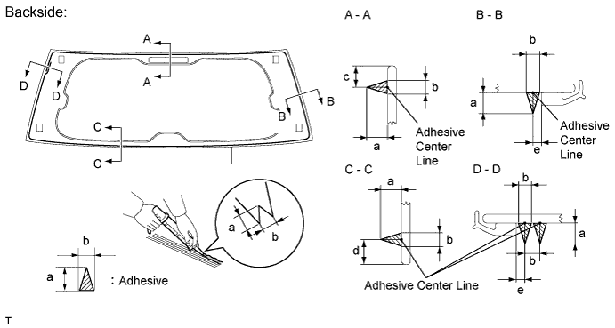
| Area | Specified Condition |
| a | 12.0 mm (0.472 in.) |
| b | 8.0 mm (0.315 in.) |
| c | 11.0 mm (0.433 in.) |
| d | 13.0 mm (0.512 in.) |
| e | 5.0 mm (0.197 in.) |
Install the back window glass to the vehicle body.
Hold the back window glass securely in place with tape or equivalent until the adhesive has hardened.
Lightly press the front surface of the back window glass to ensure that the back window glass is securely fit to the vehicle body.
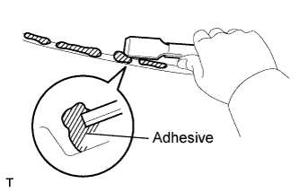 |
Using a scraper, remove any excess or protruding adhesive.
| Temperature | Minimum Time Prior to Driving Vehicle |
| 35°C (95°F) | 1 hour 30 minutes |
| 20°C (68°F) | 5 hours |
| 5°C (41°F) | 24 hours |
Connect the connectors.
| 8. INSTALL REAR WIPER MOTOR ASSEMBLY (w/ Rear Wiper) |
 |
Temporarily install the rear wiper motor assembly with the 3 bolts.
Tighten the 3 bolts.
Connect the connector.
| 9. INSTALL REAR WIPER MOTOR GROMMET (w/ Rear Wiper) |
 |
Install the rear wiper motor grommet with the position mark facing upward as shown in the illustration.
| 10. INSTALL REAR WIPER ARM (w/ Rear Wiper) |
Operate the rear wiper, and stop the rear wiper motor at the automatic stop position.
 |
Clean the wiper pivot serration with a wire brush.
 |
Set the head of the blade on the defogger line.
Install the nut and rear wiper arm.
Close the cover.
| 11. CHECK FOR LEAK AND REPAIR |
Conduct a leak test after the adhesive has completely hardened.
Seal any leaks with auto glass sealer.
| 12. INSTALL REAR SPOILER SUB-ASSEMBLY (w/ Rear Spoiler) |
 |
Attach the 3 clips to install the rear spoiler.
 |
Install the 4 bolts.
| 13. INSTALL BACK DOOR GLASS CHANNEL LH |
 |
Attach the clip and install the back door glass channel.
| 14. INSTALL BACK DOOR GLASS CHANNEL RH |
 |
Attach the clip and install the back door glass channel.
| 15. INSTALL BACK DOOR GARNISH |
 |
Attach the 14 clips to install the back door garnish.
| 16. INSTALL POWER BACK DOOR MAIN SWITCH (for Face to Face Seat Type) |
 |
Attach the 2 claws to install the power back door main switch.
| 17. INSTALL NO. 2 BACK DOOR SERVICE HOLE COVER (for Face to Face Seat Type) |
 |
Connect the connector.
Attach the 4 claws to install service hole cover.
| 18. INSTALL ASSIST GRIP (for Face to Face Seat Type) |
 |
Install the assist grip with the 2 screws.
| 19. INSTALL BACK DOOR SIDE GARNISH LH |
 |
Attach the 3 clips to install the back door side garnish.
| 20. INSTALL BACK DOOR SIDE GARNISH RH |
| 21. INSTALL CENTER BACK DOOR GARNISH |
 |
Attach the 5 clips and 2 claws to install the back door garnish.
| 22. CONNECT CABLE TO NEGATIVE BATTERY TERMINAL |